Aplicación 3.3 (Estabilidad de los parámetros estructurales): Diferenciación salarial por sexo. Exportaciones españolas.
En esta aplicación se estimarán varias regresiones que permiten parámetros no constantes.
Diferenciación salarial por sexo
De nuevo en este ejemplo se usará como especificación econométrica de partida el siguiente modelo log-lineal, que se corresponde con la ecuación de salarios de Mincer:
\[ log(SALARIO_{i}) = \beta_1 + \beta_2 EDUC_{i} + \beta_3 EXPER_{i} + e_{i} \]
donde \(SALARIO\), \(EDUC\) y \(EXPER\) representan, respectivamente, el salario percibido, el nivel de educación y el grado de experiencia de cada uno de los 526 indviduos que componen la base muestral.
Código R
# Lectura de librerías
library(tidyverse)
library(car)
# Lectura de datos
SAL_SEX <- read_csv("data/SAL_SEX.csv")
dim(SAL_SEX)[1] 526 4str(SAL_SEX)spc_tbl_ [526 × 4] (S3: spec_tbl_df/tbl_df/tbl/data.frame)
$ EDUC : num [1:526] 11 12 11 8 12 16 18 12 12 17 ...
$ EXPER : num [1:526] 2 22 2 44 7 9 15 5 26 22 ...
$ MUJER : num [1:526] 1 1 0 0 0 0 0 1 1 0 ...
$ SALARIO: num [1:526] 3.1 3.24 3 6 5.3 ...
- attr(*, "spec")=
.. cols(
.. EDUC = col_double(),
.. EXPER = col_double(),
.. MUJER = col_double(),
.. SALARIO = col_double()
.. )
- attr(*, "problems")=<externalptr> head(SAL_SEX)# A tibble: 6 × 4
EDUC EXPER MUJER SALARIO
<dbl> <dbl> <dbl> <dbl>
1 11 2 1 3.1
2 12 22 1 3.24
3 11 2 0 3
4 8 44 0 6
5 12 7 0 5.3
6 16 9 0 8.75tail(SAL_SEX)# A tibble: 6 × 4
EDUC EXPER MUJER SALARIO
<dbl> <dbl> <dbl> <dbl>
1 12 2 0 5.65
2 16 14 1 15
3 10 2 1 2.27
4 15 13 0 4.67
5 16 5 0 11.6
6 14 5 1 3.5 # Distribución de la variable dependiente
Boxplot(~SALARIO, data=SAL_SEX, main="", ylab="SALARIO", id=list(method = "none"))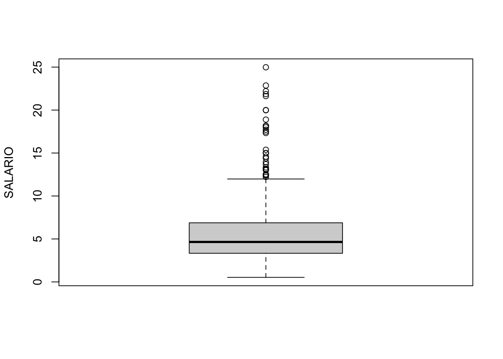
# Conversión de variable numérica MUJER (0/1) a cualitativa (factor)
class(SAL_SEX$MUJER)[1] "numeric"SEXO <- factor(SAL_SEX$MUJER, labels=c("Hombre", "Mujer"))
summary(SEXO)Hombre Mujer
274 252 # Distribución de la variable dependiente por sexo
Boxplot(SALARIO~SEXO, data=SAL_SEX, ylab="SALARIO", id=list(method = "none"))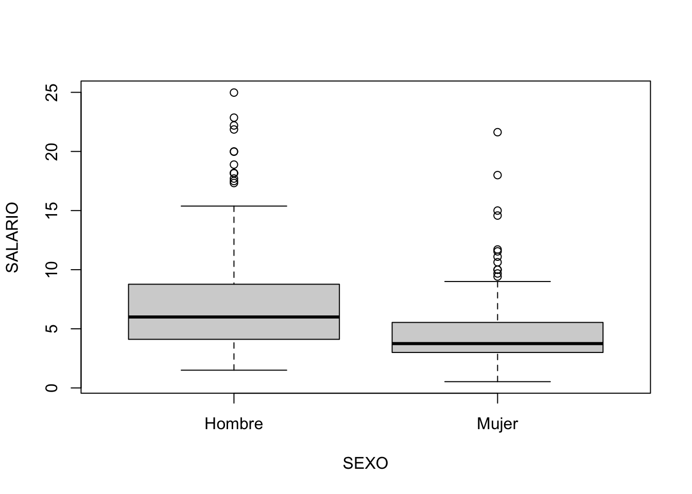
# Ecuación de salarios para la muestra total
summary(lm_SAL <- lm(log(SALARIO) ~ EDUC + EXPER , data = SAL_SEX))
Call:
lm(formula = log(SALARIO) ~ EDUC + EXPER, data = SAL_SEX)
Residuals:
Min 1Q Median 3Q Max
-2.05800 -0.30136 -0.04539 0.30601 1.44425
Coefficients:
Estimate Std. Error t value Pr(>|t|)
(Intercept) 0.216854 0.108595 1.997 0.0464 *
EDUC 0.097936 0.007622 12.848 < 2e-16 ***
EXPER 0.010347 0.001555 6.653 7.24e-11 ***
---
Signif. codes: 0 '***' 0.001 '**' 0.01 '*' 0.05 '.' 0.1 ' ' 1
Residual standard error: 0.4614 on 523 degrees of freedom
Multiple R-squared: 0.2493, Adjusted R-squared: 0.2465
F-statistic: 86.86 on 2 and 523 DF, p-value: < 2.2e-16# Gráficas parciales con diferenciación por sexo
scatterplot(log(SALARIO) ~ EDUC| SEXO, data=SAL_SEX, smooth=FALSE,
boxplots=FALSE, ylab="Relación parcial log(Salario)/Educación")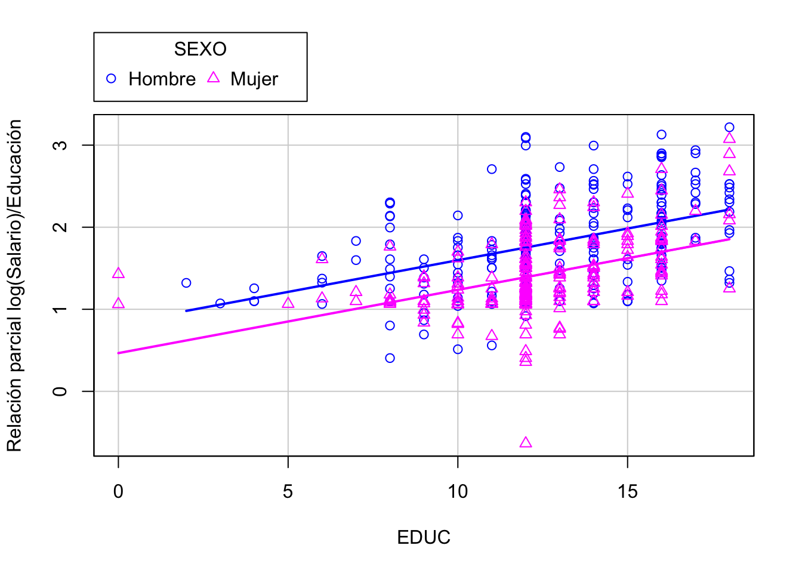
scatterplot(log(SALARIO) ~ EXPER| SEXO, data=SAL_SEX, smooth=FALSE,
boxplots=FALSE, ylab="Relación parcial log(Salario)/Experiencia")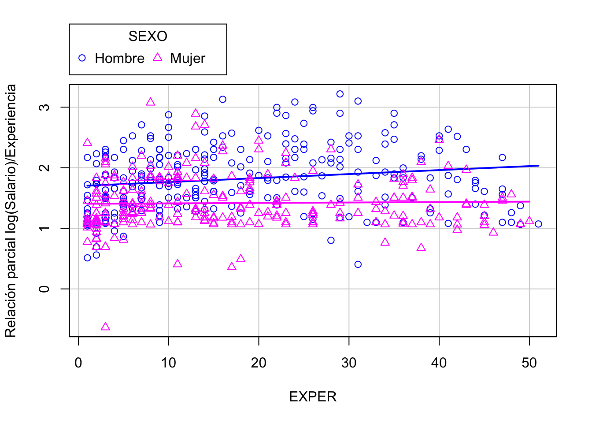
# Diferenciación por sexos:
# ¿existe realmente diferenciación por sexos? (estadísticamente significativa)
# Hombres
summary(lm_SAL_h <- lm(log(SALARIO) ~ EDUC + EXPER ,
data = SAL_SEX[which(SAL_SEX$MUJER==0),]))
Call:
lm(formula = log(SALARIO) ~ EDUC + EXPER, data = SAL_SEX[which(SAL_SEX$MUJER ==
0), ])
Residuals:
Min 1Q Median 3Q Max
-1.20460 -0.29936 -0.01032 0.28558 1.25532
Coefficients:
Estimate Std. Error t value Pr(>|t|)
(Intercept) 0.249794 0.144264 1.732 0.0845 .
EDUC 0.101813 0.009656 10.544 < 2e-16 ***
EXPER 0.014908 0.002148 6.941 2.87e-11 ***
---
Signif. codes: 0 '***' 0.001 '**' 0.01 '*' 0.05 '.' 0.1 ' ' 1
Residual standard error: 0.4457 on 271 degrees of freedom
Multiple R-squared: 0.3106, Adjusted R-squared: 0.3055
F-statistic: 61.04 on 2 and 271 DF, p-value: < 2.2e-16# Mujeres
summary(lm_SAL_m <- lm(log(SALARIO) ~ EDUC + EXPER ,
data = SAL_SEX[which(SAL_SEX$MUJER==1),]))
Call:
lm(formula = log(SALARIO) ~ EDUC + EXPER, data = SAL_SEX[which(SAL_SEX$MUJER ==
1), ])
Residuals:
Min 1Q Median 3Q Max
-1.96983 -0.21953 -0.06965 0.21896 1.22467
Coefficients:
Estimate Std. Error t value Pr(>|t|)
(Intercept) 0.334836 0.141456 2.367 0.0187 *
EDUC 0.082314 0.010458 7.871 1.08e-13 ***
EXPER 0.004116 0.001894 2.173 0.0307 *
---
Signif. codes: 0 '***' 0.001 '**' 0.01 '*' 0.05 '.' 0.1 ' ' 1
Residual standard error: 0.399 on 249 degrees of freedom
Multiple R-squared: 0.1996, Adjusted R-squared: 0.1932
F-statistic: 31.06 on 2 and 249 DF, p-value: 9.089e-13# Comparación de coeficientes estimados
compareCoefs(lm_SAL_h, lm_SAL_m)Calls:
1: lm(formula = log(SALARIO) ~ EDUC + EXPER, data =
SAL_SEX[which(SAL_SEX$MUJER == 0), ])
2: lm(formula = log(SALARIO) ~ EDUC + EXPER, data =
SAL_SEX[which(SAL_SEX$MUJER == 1), ])
Model 1 Model 2
(Intercept) 0.250 0.335
SE 0.144 0.141
EDUC 0.10181 0.08231
SE 0.00966 0.01046
EXPER 0.01491 0.00412
SE 0.00215 0.00189
# Test de Chow de cambio estructural
lm_SAL_int <- lm(log(SALARIO) ~ (EDUC + EXPER)*MUJER, data = SAL_SEX)
anova(lm_SAL, lm_SAL_int)Analysis of Variance Table
Model 1: log(SALARIO) ~ EDUC + EXPER
Model 2: log(SALARIO) ~ (EDUC + EXPER) * MUJER
Res.Df RSS Df Sum of Sq F Pr(>F)
1 523 111.345
2 520 93.477 3 17.868 33.133 < 2.2e-16 ***
---
Signif. codes: 0 '***' 0.001 '**' 0.01 '*' 0.05 '.' 0.1 ' ' 1# Regresión diferenciada por sexos
summary(lm_SAL_int)
Call:
lm(formula = log(SALARIO) ~ (EDUC + EXPER) * MUJER, data = SAL_SEX)
Residuals:
Min 1Q Median 3Q Max
-1.96983 -0.26177 -0.03718 0.25663 1.25532
Coefficients:
Estimate Std. Error t value Pr(>|t|)
(Intercept) 0.249794 0.137237 1.820 0.069308 .
EDUC 0.101813 0.009186 11.084 < 2e-16 ***
EXPER 0.014908 0.002043 7.296 1.11e-12 ***
MUJER 0.085042 0.203534 0.418 0.676247
EDUC:MUJER -0.019499 0.014417 -1.352 0.176818
EXPER:MUJER -0.010792 0.002868 -3.763 0.000187 ***
---
Signif. codes: 0 '***' 0.001 '**' 0.01 '*' 0.05 '.' 0.1 ' ' 1
Residual standard error: 0.424 on 520 degrees of freedom
Multiple R-squared: 0.3698, Adjusted R-squared: 0.3637
F-statistic: 61.03 on 5 and 520 DF, p-value: < 2.2e-16Código Python
# Lectura de librerías
import numpy as np
import pandas as pd
import matplotlib.pyplot as plt
import seaborn as sns
import statsmodels.api as sm
import statsmodels.formula.api as smf
import statsmodels.stats as smstats
import scipy as sp
# Lectura de datos
SAL_SEX = pd.read_csv("data/SAL_SEX.csv")
SAL_SEX.shape(526, 4)SAL_SEX.info()<class 'pandas.core.frame.DataFrame'>
RangeIndex: 526 entries, 0 to 525
Data columns (total 4 columns):
# Column Non-Null Count Dtype
--- ------ -------------- -----
0 EDUC 526 non-null int64
1 EXPER 526 non-null int64
2 MUJER 526 non-null int64
3 SALARIO 526 non-null float64
dtypes: float64(1), int64(3)
memory usage: 16.6 KBSAL_SEX.head() EDUC EXPER MUJER SALARIO
0 11 2 1 3.10
1 12 22 1 3.24
2 11 2 0 3.00
3 8 44 0 6.00
4 12 7 0 5.30SAL_SEX.tail() EDUC EXPER MUJER SALARIO
521 16 14 1 15.00
522 10 2 1 2.27
523 15 13 0 4.67
524 16 5 0 11.56
525 14 5 1 3.50# Distribución de la variable dependiente
plt.figure(1)
sns.boxplot(x=SAL_SEX["SALARIO"])
plt.show()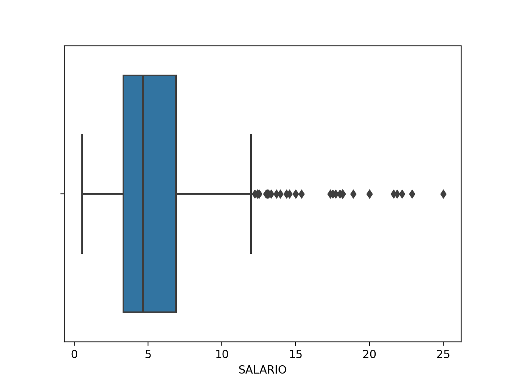
# Conversión de variable numérica a cualitativa (factor)
SAL_SEX['SEXO']=SAL_SEX['MUJER'].astype('category')
SAL_SEX['SEXO']=SAL_SEX['SEXO'].cat.rename_categories(['Hombre', 'Mujer'])
# Distribución de la variable dependiente por sexo
plt.figure(2)
sns.boxplot(x=SAL_SEX["SALARIO"] , y=SAL_SEX["SEXO"])
plt.show()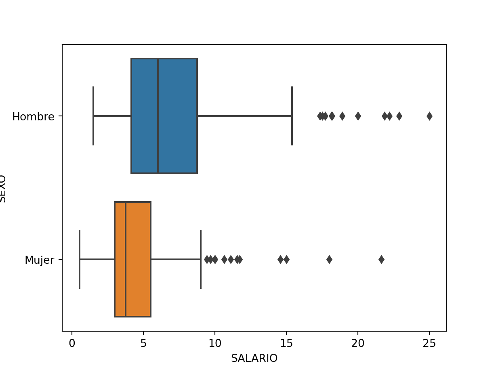
# Ecuación de salarios para la muestra total
lm_SAL = smf.ols(formula='np.log(SALARIO) ~ EDUC + EXPER', data=SAL_SEX).fit()
print(lm_SAL.summary()) OLS Regression Results
==============================================================================
Dep. Variable: np.log(SALARIO) R-squared: 0.249
Model: OLS Adj. R-squared: 0.246
Method: Least Squares F-statistic: 86.86
Date: Wed, 22 Nov 2023 Prob (F-statistic): 2.68e-33
Time: 18:42:06 Log-Likelihood: -338.01
No. Observations: 526 AIC: 682.0
Df Residuals: 523 BIC: 694.8
Df Model: 2
Covariance Type: nonrobust
==============================================================================
coef std err t P>|t| [0.025 0.975]
------------------------------------------------------------------------------
Intercept 0.2169 0.109 1.997 0.046 0.004 0.430
EDUC 0.0979 0.008 12.848 0.000 0.083 0.113
EXPER 0.0103 0.002 6.653 0.000 0.007 0.013
==============================================================================
Omnibus: 7.740 Durbin-Watson: 1.789
Prob(Omnibus): 0.021 Jarque-Bera (JB): 9.485
Skew: 0.165 Prob(JB): 0.00872
Kurtosis: 3.569 Cond. No. 130.
==============================================================================
Notes:
[1] Standard Errors assume that the covariance matrix of the errors is correctly specified.# Gráficas parciales con diferenciación por sexo
SAL_SEX['l_SALARIO']=np.log(SAL_SEX['SALARIO'])
plt.figure(3)
sns.lmplot(x="EDUC", y="l_SALARIO", hue="SEXO", data=SAL_SEX);
plt.show()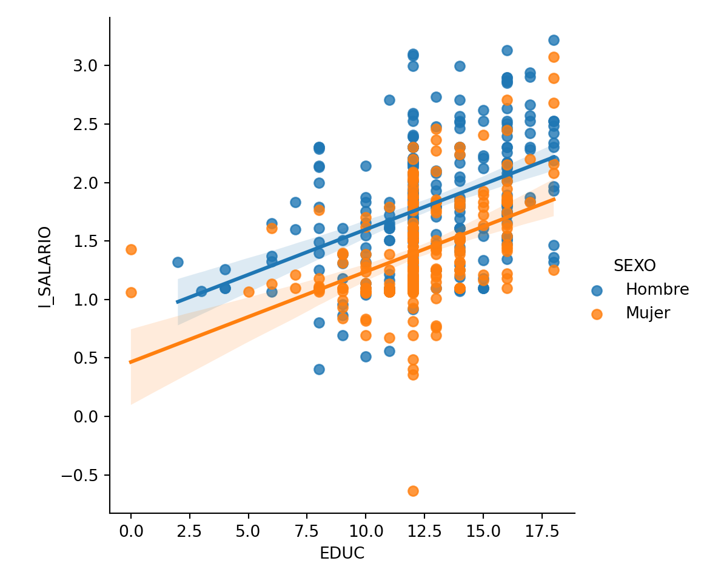
plt.figure(4)
sns.lmplot(x="EXPER", y="l_SALARIO", hue="SEXO", data=SAL_SEX);
plt.show()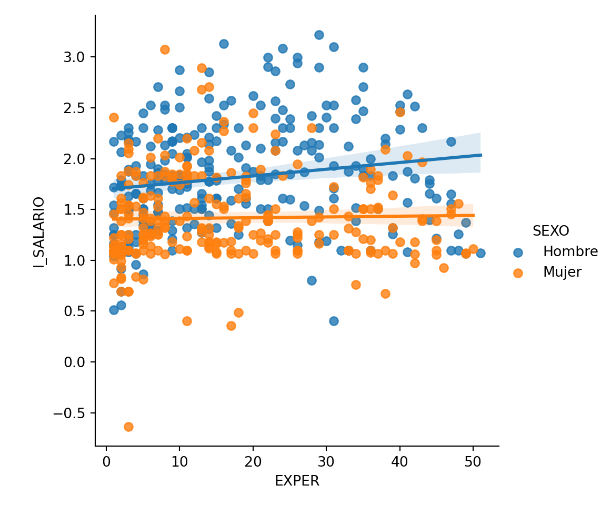
# Diferenciación por sexos:
# ¿existe realmente diferenciación por sexos? (estadísticamente significativa)
# Hombres
lm_SAL_h = smf.ols(formula='np.log(SALARIO) ~ EDUC + EXPER',
subset=(SAL_SEX['MUJER'] == 0), data=SAL_SEX).fit()
print(lm_SAL_h.summary()) OLS Regression Results
==============================================================================
Dep. Variable: np.log(SALARIO) R-squared: 0.311
Model: OLS Adj. R-squared: 0.305
Method: Least Squares F-statistic: 61.04
Date: Wed, 22 Nov 2023 Prob (F-statistic): 1.30e-22
Time: 18:42:08 Log-Likelihood: -165.86
No. Observations: 274 AIC: 337.7
Df Residuals: 271 BIC: 348.5
Df Model: 2
Covariance Type: nonrobust
==============================================================================
coef std err t P>|t| [0.025 0.975]
------------------------------------------------------------------------------
Intercept 0.2498 0.144 1.732 0.084 -0.034 0.534
EDUC 0.1018 0.010 10.544 0.000 0.083 0.121
EXPER 0.0149 0.002 6.941 0.000 0.011 0.019
==============================================================================
Omnibus: 0.921 Durbin-Watson: 1.872
Prob(Omnibus): 0.631 Jarque-Bera (JB): 0.674
Skew: 0.098 Prob(JB): 0.714
Kurtosis: 3.143 Cond. No. 131.
==============================================================================
Notes:
[1] Standard Errors assume that the covariance matrix of the errors is correctly specified.# Mujeres
lm_SAL_m = smf.ols(formula='np.log(SALARIO) ~ EDUC + EXPER',
subset=(SAL_SEX['MUJER'] == 1), data=SAL_SEX).fit()
print(lm_SAL_m.summary()) OLS Regression Results
==============================================================================
Dep. Variable: np.log(SALARIO) R-squared: 0.200
Model: OLS Adj. R-squared: 0.193
Method: Least Squares F-statistic: 31.06
Date: Wed, 22 Nov 2023 Prob (F-statistic): 9.09e-13
Time: 18:42:08 Log-Likelihood: -124.54
No. Observations: 252 AIC: 255.1
Df Residuals: 249 BIC: 265.7
Df Model: 2
Covariance Type: nonrobust
==============================================================================
coef std err t P>|t| [0.025 0.975]
------------------------------------------------------------------------------
Intercept 0.3348 0.141 2.367 0.019 0.056 0.613
EDUC 0.0823 0.010 7.871 0.000 0.062 0.103
EXPER 0.0041 0.002 2.173 0.031 0.000 0.008
==============================================================================
Omnibus: 17.664 Durbin-Watson: 2.103
Prob(Omnibus): 0.000 Jarque-Bera (JB): 56.098
Skew: 0.007 Prob(JB): 6.58e-13
Kurtosis: 5.311 Cond. No. 133.
==============================================================================
Notes:
[1] Standard Errors assume that the covariance matrix of the errors is correctly specified.# Regresión diferenciada por sexos
lm_SAL_int = smf.ols(formula='np.log(SALARIO) ~ (EDUC + EXPER)*MUJER',
data=SAL_SEX).fit()
print(lm_SAL_int.summary()) OLS Regression Results
==============================================================================
Dep. Variable: np.log(SALARIO) R-squared: 0.370
Model: OLS Adj. R-squared: 0.364
Method: Least Squares F-statistic: 61.03
Date: Wed, 22 Nov 2023 Prob (F-statistic): 5.27e-50
Time: 18:42:08 Log-Likelihood: -292.01
No. Observations: 526 AIC: 596.0
Df Residuals: 520 BIC: 621.6
Df Model: 5
Covariance Type: nonrobust
===============================================================================
coef std err t P>|t| [0.025 0.975]
-------------------------------------------------------------------------------
Intercept 0.2498 0.137 1.820 0.069 -0.020 0.519
EDUC 0.1018 0.009 11.084 0.000 0.084 0.120
EXPER 0.0149 0.002 7.296 0.000 0.011 0.019
MUJER 0.0850 0.204 0.418 0.676 -0.315 0.485
EDUC:MUJER -0.0195 0.014 -1.352 0.177 -0.048 0.009
EXPER:MUJER -0.0108 0.003 -3.763 0.000 -0.016 -0.005
==============================================================================
Omnibus: 12.139 Durbin-Watson: 1.802
Prob(Omnibus): 0.002 Jarque-Bera (JB): 22.040
Skew: 0.063 Prob(JB): 1.64e-05
Kurtosis: 3.995 Cond. No. 333.
==============================================================================
Notes:
[1] Standard Errors assume that the covariance matrix of the errors is correctly specified.# Test de Chow de cambio estructural
sm.stats.anova_lm(lm_SAL,lm_SAL_int) df_resid ssr df_diff ss_diff F Pr(>F)
0 523.0 111.344709 0.0 NaN NaN NaN
1 520.0 93.476534 3.0 17.868174 33.132916 1.306612e-19Exportaciones antes y después de la entrada de España en la Unión Europea
Tanto la teoría económica como la experiencia econométrica internacional nos señalan que las exportaciones de bienes y servicios de un país dependen de dos variables básicas, un indicador de actividad económica mundial y un indicador de precios relativos. Para estimar una ecuación de exportaciones para el caso español, se han tomado series de datos históricos para el período 1970-1997 de las siguientes variables: las exportaciones reales de bienes y servicios, excluido el turismo (\(XGS\)); el índice anual del producto interior bruto real mundial (\(WGDP\)); y el tipo de cambio efectivo real respecto al conjunto de las diez monedas principales, corregido por la relación de precios de exportación de España respecto a la media ponderada de los precios de exportación de los principales países (\(REER\)).
El modelo de regresión que se usará como soporte del ejemplo es el siguiente:
\[ log(XGS_{t}) = \beta_1 + \beta_2 log(WGDP_{t}) + \beta_3 log(REER_{t}) + e_{t} \]
Código R
# Lectura de librerías
library(tidyverse)
library(car)
# Lectura de datos
EXP_ESP <- read_delim("data/EXP_ESP_Y.csv", delim = ";")
# División de la muestra entre preUE (1970-1985) y postUE (1986-1997)
Y1986 = match(as.Date("1986-01-01"), EXP_ESP$date)
Y1986[1] 17# Variables numérica y cualitativa de subperíodos
UE <- factor(c(rep(0, 16), rep(1, 12)), labels=c("preUE", "postUE"))
UE [1] preUE preUE preUE preUE preUE preUE preUE preUE preUE preUE
[11] preUE preUE preUE preUE preUE preUE postUE postUE postUE postUE
[21] postUE postUE postUE postUE postUE postUE postUE postUE
Levels: preUE postUEclass(UE)[1] "factor"EXP_ESP$D1986 <- as.numeric(UE)-1
EXP_ESP$D1986 [1] 0 0 0 0 0 0 0 0 0 0 0 0 0 0 0 0 1 1 1 1 1 1 1 1 1 1 1 1class(EXP_ESP$D1986)[1] "numeric"# Formato de series temporales
EXP_ESP_ts <- ts(EXP_ESP[,2:5], start=c(1970), end = c(1997), frequency = 1)
plot(EXP_ESP_ts)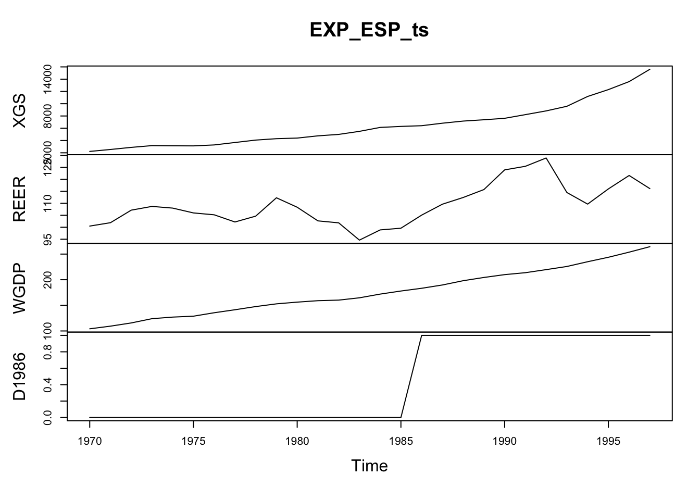
# Ecuación de exportaciones para el período completo (1970-1997)
lm_X_ESP <- lm(log(XGS) ~ log(WGDP) + log(REER), data = EXP_ESP_ts)
summary(lm_X_ESP)
Call:
lm(formula = log(XGS) ~ log(WGDP) + log(REER), data = EXP_ESP_ts)
Residuals:
Min 1Q Median 3Q Max
-0.08302 -0.04419 -0.02013 0.03883 0.14376
Coefficients:
Estimate Std. Error t value Pr(>|t|)
(Intercept) -0.24239 0.84432 -0.287 0.776
log(WGDP) 2.04618 0.06235 32.820 <2e-16 ***
log(REER) -0.34878 0.21480 -1.624 0.117
---
Signif. codes: 0 '***' 0.001 '**' 0.01 '*' 0.05 '.' 0.1 ' ' 1
Residual standard error: 0.06663 on 25 degrees of freedom
Multiple R-squared: 0.9853, Adjusted R-squared: 0.9841
F-statistic: 836.6 on 2 and 25 DF, p-value: < 2.2e-16# Gráficas parciales con diferenciación por subperíodos
scatterplot(log(XGS) ~ log(WGDP)| D1986, data=EXP_ESP_ts,
smooth=FALSE, boxplots=FALSE,
ylab="Relación parcial Exportaciones/PIB mundial (logs)")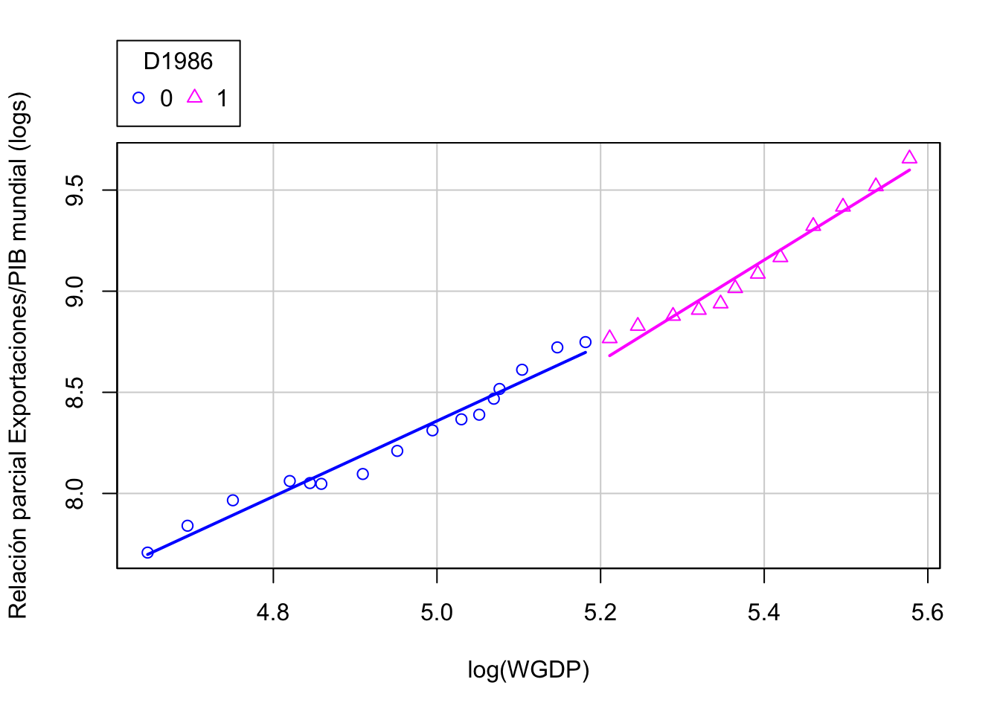
scatterplot(log(XGS) ~ log(REER)| D1986, data=EXP_ESP_ts,
smooth=FALSE, boxplots=FALSE,
ylab="Relación parcial Exportaciones/Tipo de cambio (logs)")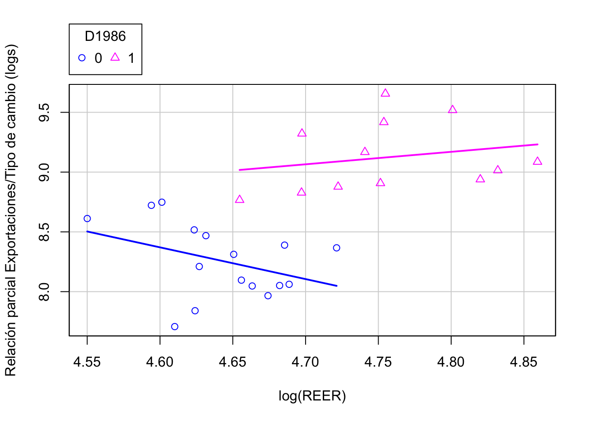
# Diferenciación por subperíodos
# PreUE
preUE <- window(EXP_ESP_ts, start=1970, end = 1985)
lm_X_ESP_preUE <- lm(log(XGS) ~ log(WGDP) + log(REER) , data = preUE)
summary(lm_X_ESP_preUE)
Call:
lm(formula = log(XGS) ~ log(WGDP) + log(REER), data = preUE)
Residuals:
Min 1Q Median 3Q Max
-0.085980 -0.029433 0.003653 0.027247 0.084831
Coefficients:
Estimate Std. Error t value Pr(>|t|)
(Intercept) 2.5078 1.6493 1.520 0.1523
log(WGDP) 1.8144 0.0846 21.447 1.57e-11 ***
log(REER) -0.6945 0.3187 -2.179 0.0483 *
---
Signif. codes: 0 '***' 0.001 '**' 0.01 '*' 0.05 '.' 0.1 ' ' 1
Residual standard error: 0.05124 on 13 degrees of freedom
Multiple R-squared: 0.9763, Adjusted R-squared: 0.9727
F-statistic: 267.8 on 2 and 13 DF, p-value: 2.725e-11# PostUE
postUE <- window(EXP_ESP_ts, start=1986, end = 1997)
lm_X_ESP_postUE <- lm(log(XGS) ~ log(WGDP) + log(REER) , data = postUE)
summary(lm_X_ESP_postUE)
Call:
lm(formula = log(XGS) ~ log(WGDP) + log(REER), data = postUE)
Residuals:
Min 1Q Median 3Q Max
-0.052680 -0.032117 0.005373 0.029904 0.037074
Coefficients:
Estimate Std. Error t value Pr(>|t|)
(Intercept) -1.6788 0.8889 -1.889 0.09153 .
log(WGDP) 2.6425 0.1032 25.610 1.02e-09 ***
log(REER) -0.7220 0.1933 -3.735 0.00466 **
---
Signif. codes: 0 '***' 0.001 '**' 0.01 '*' 0.05 '.' 0.1 ' ' 1
Residual standard error: 0.03661 on 9 degrees of freedom
Multiple R-squared: 0.9871, Adjusted R-squared: 0.9842
F-statistic: 344.6 on 2 and 9 DF, p-value: 3.133e-09# Comparación de coeficientes estimados
compareCoefs(lm_X_ESP_preUE,lm_X_ESP_postUE)Calls:
1: lm(formula = log(XGS) ~ log(WGDP) + log(REER), data = preUE)
2: lm(formula = log(XGS) ~ log(WGDP) + log(REER), data = postUE)
Model 1 Model 2
(Intercept) 2.508 -1.679
SE 1.649 0.889
log(WGDP) 1.8144 2.6425
SE 0.0846 0.1032
log(REER) -0.694 -0.722
SE 0.319 0.193
# ¿Existe diferenciación estadísticamente significativa por períodos?
# Test de Chow de cambio estructural
# Método 1 (ANOVA)
lm_X_EXP_int <- lm(log(XGS) ~ (log(WGDP) + log(REER))*D1986,
data = EXP_ESP_ts)
summary(lm_X_EXP_int)
Call:
lm(formula = log(XGS) ~ (log(WGDP) + log(REER)) * D1986, data = EXP_ESP_ts)
Residuals:
Min 1Q Median 3Q Max
-0.085980 -0.030598 0.004582 0.029904 0.084831
Coefficients:
Estimate Std. Error t value Pr(>|t|)
(Intercept) 2.50775 1.47498 1.700 0.1032
log(WGDP) 1.81445 0.07566 23.982 < 2e-16 ***
log(REER) -0.69447 0.28504 -2.436 0.0234 *
D1986 -4.18659 1.84754 -2.266 0.0336 *
log(WGDP):D1986 0.82803 0.14968 5.532 1.47e-05 ***
log(REER):D1986 -0.02750 0.37389 -0.074 0.9420
---
Signif. codes: 0 '***' 0.001 '**' 0.01 '*' 0.05 '.' 0.1 ' ' 1
Residual standard error: 0.04583 on 22 degrees of freedom
Multiple R-squared: 0.9939, Adjusted R-squared: 0.9925
F-statistic: 713.6 on 5 and 22 DF, p-value: < 2.2e-16anova(lm_X_ESP, lm_X_EXP_int)Analysis of Variance Table
Model 1: log(XGS) ~ log(WGDP) + log(REER)
Model 2: log(XGS) ~ (log(WGDP) + log(REER)) * D1986
Res.Df RSS Df Sum of Sq F Pr(>F)
1 25 0.110991
2 22 0.046204 3 0.064787 10.283 0.0001978 ***
---
Signif. codes: 0 '***' 0.001 '**' 0.01 '*' 0.05 '.' 0.1 ' ' 1# Método 2 (librería structchange)
library(strucchange)
sctest(log(XGS) ~ log(WGDP) + log(REER), data=EXP_ESP_ts,
type = "Chow", point = Y1986-1)
Chow test
data: log(XGS) ~ log(WGDP) + log(REER)
F = 10.283, p-value = 0.0001978# Contrastes tipo Chow basados en estimaciones recursivas
# [se elimina un % de observaciones en los extremmos]
sbtest <- Fstats(log(XGS) ~ log(WGDP) + log(REER), data = EXP_ESP_ts,
from = 0.15, to = 0.85)
sbtest[["Fstats"]]Time Series:
Start = 1973
End = 1992
Frequency = 1
[1] 26.94858 40.37538 52.72550 53.14715 43.28653 41.27132 51.76225 53.52206
[9] 43.97098 39.04442 33.07102 30.47271 30.84853 32.31100 37.23453 41.05085
[17] 41.68393 41.71401 38.20854 33.80421plot(sbtest, alpha = 0.05)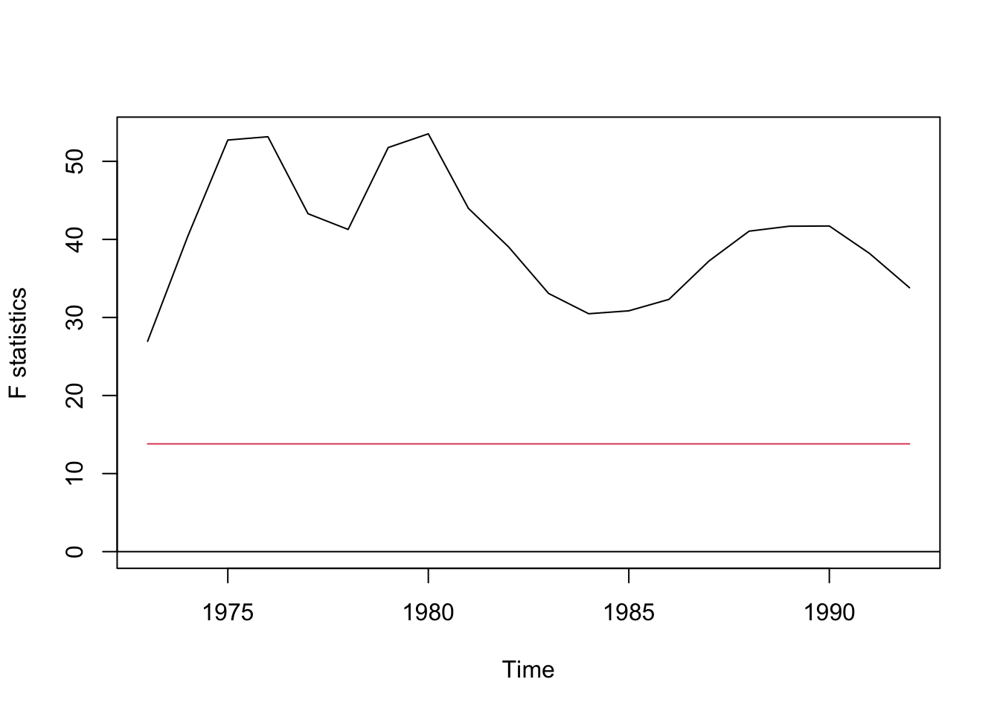
# Test de Chow (1960) [versión Chi2]
# [punto de ruptura conocido: 17 - 4 (15% suprimidos a la izquierda) ]
Chow_F <- sbtest$Fstats[Y1986-4]
Chow_F [1] 30.84853# Se puede comprobar que CHOW=Chow_F/K
# Chow_F tiene una distribución asintótica Chi^2 mientras que
# CHOW tiene una distribución exacta F_K,T-2*K
pval <- 1-pchisq(Chow_F,sbtest$nreg)
pval[1] 9.148179e-07# Contrastes de Andrews (1993) y Andrews y Ploberger (1994): supF, aveF, expF
# [punto de ruptura desconocido]
sctest(sbtest, type = "supF")
supF test
data: sbtest
sup.F = 53.522, p-value = 2.556e-10sctest(sbtest, type = "aveF")
aveF test
data: sbtest
ave.F = 40.323, p-value = 1.043e-13sctest(sbtest, type = "expF")
expF test
data: sbtest
exp.F = 24.845, p-value = 0.0007622# Test CUSUM (Brown, Durbin y Evans, 1975)
plot(efp(log(XGS) ~ log(WGDP) + log(REER), data = EXP_ESP_ts))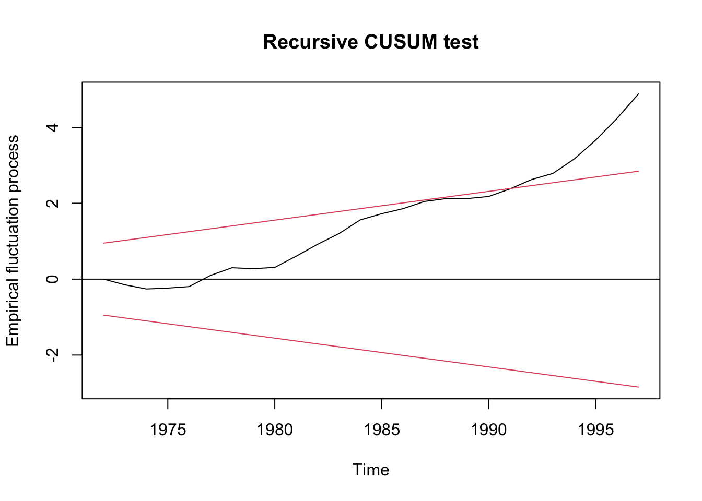
# Regresión diferenciada por tramos temporales
summary(lm(log(XGS) ~ (log(WGDP) + log(REER))*D1986, data=EXP_ESP_ts))
Call:
lm(formula = log(XGS) ~ (log(WGDP) + log(REER)) * D1986, data = EXP_ESP_ts)
Residuals:
Min 1Q Median 3Q Max
-0.085980 -0.030598 0.004582 0.029904 0.084831
Coefficients:
Estimate Std. Error t value Pr(>|t|)
(Intercept) 2.50775 1.47498 1.700 0.1032
log(WGDP) 1.81445 0.07566 23.982 < 2e-16 ***
log(REER) -0.69447 0.28504 -2.436 0.0234 *
D1986 -4.18659 1.84754 -2.266 0.0336 *
log(WGDP):D1986 0.82803 0.14968 5.532 1.47e-05 ***
log(REER):D1986 -0.02750 0.37389 -0.074 0.9420
---
Signif. codes: 0 '***' 0.001 '**' 0.01 '*' 0.05 '.' 0.1 ' ' 1
Residual standard error: 0.04583 on 22 degrees of freedom
Multiple R-squared: 0.9939, Adjusted R-squared: 0.9925
F-statistic: 713.6 on 5 and 22 DF, p-value: < 2.2e-16Código Python
# Lectura de librerías
import numpy as np
import pandas as pd
import matplotlib.pyplot as plt
import seaborn as sns
import scipy as sp
import statsmodels.api as sm
import statsmodels.formula.api as smf
import statsmodels.stats as smstats
# Lectura de datos
EXP_ESP = pd.read_csv("data/EXP_ESP_Y.csv", sep=";",
parse_dates=['date'], index_col='date')
date = pd.date_range(start = '1970', periods = len(EXP_ESP.index), freq = 'Y')
EXP_ESP.index = date
EXP_ESP.indexDatetimeIndex(['1970-12-31', '1971-12-31', '1972-12-31', '1973-12-31',
'1974-12-31', '1975-12-31', '1976-12-31', '1977-12-31',
'1978-12-31', '1979-12-31', '1980-12-31', '1981-12-31',
'1982-12-31', '1983-12-31', '1984-12-31', '1985-12-31',
'1986-12-31', '1987-12-31', '1988-12-31', '1989-12-31',
'1990-12-31', '1991-12-31', '1992-12-31', '1993-12-31',
'1994-12-31', '1995-12-31', '1996-12-31', '1997-12-31'],
dtype='datetime64[ns]', freq='A-DEC')EXP_ESP.info()<class 'pandas.core.frame.DataFrame'>
DatetimeIndex: 28 entries, 1970-12-31 to 1997-12-31
Freq: A-DEC
Data columns (total 3 columns):
# Column Non-Null Count Dtype
--- ------ -------------- -----
0 XGS 28 non-null float64
1 REER 28 non-null float64
2 WGDP 28 non-null float64
dtypes: float64(3)
memory usage: 896.0 bytesEXP_ESP.head() XGS REER WGDP
1970-12-31 2225.123047 100.495876 104.200000
1971-12-31 2541.091064 101.909402 109.410000
1972-12-31 2881.596924 107.146269 115.646370
1973-12-31 3169.757080 108.713460 123.972908
1974-12-31 3138.059082 108.003898 127.072231EXP_ESP.tail() XGS REER WGDP
1993-12-31 9579.586 114.520445 225.825635
1994-12-31 11181.767 109.674712 235.084486
1995-12-31 12299.895 116.021269 243.782612
1996-12-31 13604.854 121.631204 253.777699
1997-12-31 15611.863 116.142901 264.436363# Variables numérica y cualitativa de subperíodos
EXP_ESP['D1986'] = np.where(EXP_ESP.index > '1985-12-31', 1, 0)
EXP_ESP['UE']=EXP_ESP['D1986'].astype('category')
EXP_ESP['UE']=EXP_ESP['UE'].cat.rename_categories(['preUE', 'postUE'])
# Ecuación de exportaciones para el período completo (1970-1997)
lm_X_ESP = smf.ols(formula='np.log(XGS) ~ np.log(WGDP) + np.log(REER)',
data=EXP_ESP).fit()
print(lm_X_ESP.summary()) OLS Regression Results
==============================================================================
Dep. Variable: np.log(XGS) R-squared: 0.985
Model: OLS Adj. R-squared: 0.984
Method: Least Squares F-statistic: 836.6
Date: Wed, 22 Nov 2023 Prob (F-statistic): 1.26e-23
Time: 18:42:10 Log-Likelihood: 37.697
No. Observations: 28 AIC: -69.39
Df Residuals: 25 BIC: -65.40
Df Model: 2
Covariance Type: nonrobust
================================================================================
coef std err t P>|t| [0.025 0.975]
--------------------------------------------------------------------------------
Intercept -0.2424 0.844 -0.287 0.776 -1.981 1.497
np.log(WGDP) 2.0462 0.062 32.820 0.000 1.918 2.175
np.log(REER) -0.3488 0.215 -1.624 0.117 -0.791 0.094
==============================================================================
Omnibus: 2.960 Durbin-Watson: 0.290
Prob(Omnibus): 0.228 Jarque-Bera (JB): 2.618
Skew: 0.693 Prob(JB): 0.270
Kurtosis: 2.434 Cond. No. 485.
==============================================================================
Notes:
[1] Standard Errors assume that the covariance matrix of the errors is correctly specified.# Gráficas parciales con diferenciación por subperíodos
EXP_ESP['l_XGS']=np.log(EXP_ESP['XGS'])
EXP_ESP['l_WGDP']=np.log(EXP_ESP['WGDP'])
EXP_ESP['l_REER']=np.log(EXP_ESP['REER'])
plt.figure(5)
sns.lmplot(x="l_WGDP", y="l_XGS", hue="UE", data=EXP_ESP);
plt.show()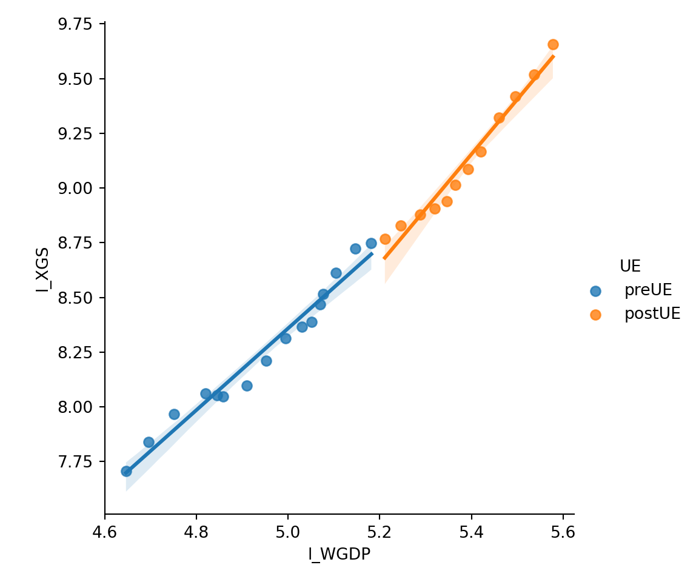
plt.figure(6)
sns.lmplot(x="l_REER", y="l_XGS", hue="UE", data=EXP_ESP);
plt.show()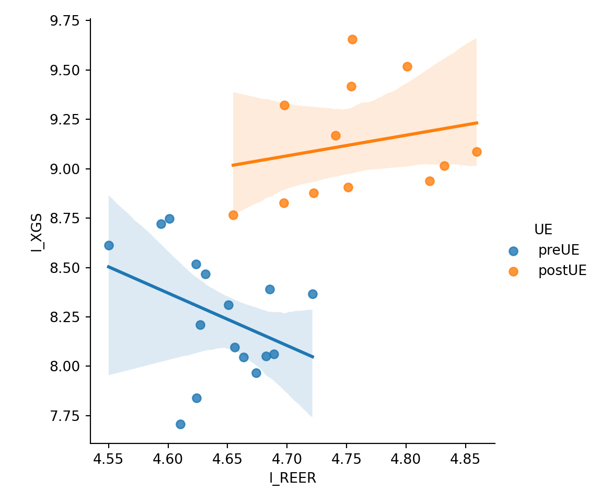
# Diferenciación por subperíodos
# PreUE
lm_X_ESP_preUE = smf.ols(formula='np.log(XGS) ~ np.log(WGDP) + np.log(REER)',
subset=(EXP_ESP['D1986'] == 0), data=EXP_ESP).fit()
print(lm_X_ESP_preUE.summary()) OLS Regression Results
==============================================================================
Dep. Variable: np.log(XGS) R-squared: 0.976
Model: OLS Adj. R-squared: 0.973
Method: Least Squares F-statistic: 267.8
Date: Wed, 22 Nov 2023 Prob (F-statistic): 2.72e-11
Time: 18:42:11 Log-Likelihood: 26.496
No. Observations: 16 AIC: -46.99
Df Residuals: 13 BIC: -44.68
Df Model: 2
Covariance Type: nonrobust
================================================================================
coef std err t P>|t| [0.025 0.975]
--------------------------------------------------------------------------------
Intercept 2.5077 1.649 1.520 0.152 -1.055 6.071
np.log(WGDP) 1.8144 0.085 21.447 0.000 1.632 1.997
np.log(REER) -0.6945 0.319 -2.179 0.048 -1.383 -0.006
==============================================================================
Omnibus: 0.094 Durbin-Watson: 0.755
Prob(Omnibus): 0.954 Jarque-Bera (JB): 0.314
Skew: 0.078 Prob(JB): 0.855
Kurtosis: 2.331 Cond. No. 899.
==============================================================================
Notes:
[1] Standard Errors assume that the covariance matrix of the errors is correctly specified.# PostUE
lm_X_ESP_postUE = smf.ols(formula='np.log(XGS) ~ np.log(WGDP) + np.log(REER)',
subset=(EXP_ESP['D1986'] == 1), data=EXP_ESP).fit()
print(lm_X_ESP_postUE.summary()) OLS Regression Results
==============================================================================
Dep. Variable: np.log(XGS) R-squared: 0.987
Model: OLS Adj. R-squared: 0.984
Method: Least Squares F-statistic: 344.6
Date: Wed, 22 Nov 2023 Prob (F-statistic): 3.13e-09
Time: 18:42:12 Log-Likelihood: 24.386
No. Observations: 12 AIC: -42.77
Df Residuals: 9 BIC: -41.32
Df Model: 2
Covariance Type: nonrobust
================================================================================
coef std err t P>|t| [0.025 0.975]
--------------------------------------------------------------------------------
Intercept -1.6788 0.889 -1.889 0.092 -3.690 0.332
np.log(WGDP) 2.6425 0.103 25.610 0.000 2.409 2.876
np.log(REER) -0.7220 0.193 -3.735 0.005 -1.159 -0.285
==============================================================================
Omnibus: 3.241 Durbin-Watson: 1.134
Prob(Omnibus): 0.198 Jarque-Bera (JB): 1.223
Skew: -0.318 Prob(JB): 0.543
Kurtosis: 1.572 Cond. No. 620.
==============================================================================
Notes:
[1] Standard Errors assume that the covariance matrix of the errors is correctly specified.# Regresión diferenciada por tramos temporales
lm_X_ESP_int = smf.ols(formula='np.log(XGS) ~ (np.log(WGDP) + np.log(REER))*D1986',
data=EXP_ESP).fit()
print(lm_X_ESP_int.summary()) OLS Regression Results
==============================================================================
Dep. Variable: np.log(XGS) R-squared: 0.994
Model: OLS Adj. R-squared: 0.992
Method: Least Squares F-statistic: 713.6
Date: Wed, 22 Nov 2023 Prob (F-statistic): 1.46e-23
Time: 18:42:12 Log-Likelihood: 49.966
No. Observations: 28 AIC: -87.93
Df Residuals: 22 BIC: -79.94
Df Model: 5
Covariance Type: nonrobust
======================================================================================
coef std err t P>|t| [0.025 0.975]
--------------------------------------------------------------------------------------
Intercept 2.5077 1.475 1.700 0.103 -0.551 5.567
np.log(WGDP) 1.8144 0.076 23.982 0.000 1.658 1.971
np.log(REER) -0.6945 0.285 -2.436 0.023 -1.286 -0.103
D1986 -4.1866 1.848 -2.266 0.034 -8.018 -0.355
np.log(WGDP):D1986 0.8280 0.150 5.532 0.000 0.518 1.138
np.log(REER):D1986 -0.0275 0.374 -0.074 0.942 -0.803 0.748
==============================================================================
Omnibus: 0.097 Durbin-Watson: 0.854
Prob(Omnibus): 0.953 Jarque-Bera (JB): 0.319
Skew: 0.000 Prob(JB): 0.853
Kurtosis: 2.477 Cond. No. 2.08e+03
==============================================================================
Notes:
[1] Standard Errors assume that the covariance matrix of the errors is correctly specified.
[2] The condition number is large, 2.08e+03. This might indicate that there are
strong multicollinearity or other numerical problems.# Test de Chow de cambio estructural
sm.stats.anova_lm(lm_X_ESP,lm_X_ESP_int) df_resid ssr df_diff ss_diff F Pr(>F)
0 25.0 0.110991 0.0 NaN NaN NaN
1 22.0 0.046204 3.0 0.064787 10.282842 0.000198